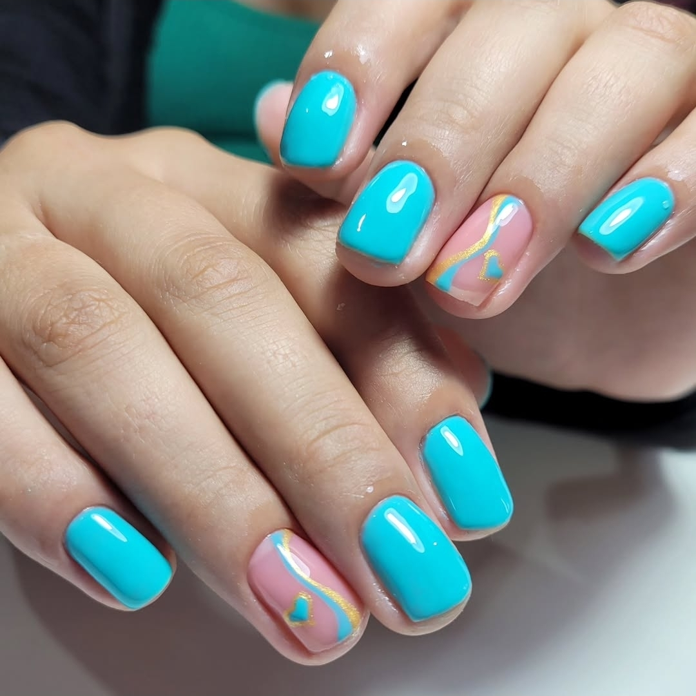

Beleza e elegância começando pelas mãos.
Meu foco é unir estética e saúde, utilizando produtos de alta qualidade
e protocolos de higiene rigorosos para garantir um resultado impecável,
natural e duradouro.
Agende seu horário e descubra a resistência e a beleza que suas
unhas podem ter:
Excelência Técnica e Humana
